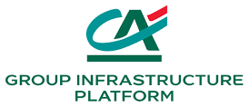
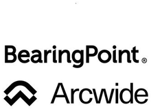
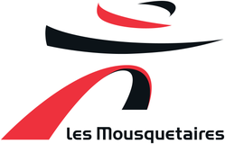
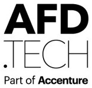
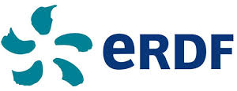
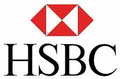

Mes expériences
Consultant indépendant depuis 2015 avec ma société JRConsulting, fondateur de monentrepriselocale.fr depuis 2026 : des télécoms à la cybersécurité bancaire. Cliquez sur une expérience pour en voir le détail : contexte, missions, réalisations et environnement.
Liste des expériences
-
2026Aujourd'hui
Fondateur monentrepriselocale.fr Création de sites internet clés en main pour les petits commerçants et artisans, réalisés par une équipe basée à Madagascar.
En parallèle de mes missions, j'ai fondé monentrepriselocale.fr, une start-up franco-malgache qui réalise des sites internet pour les petits commerçants : coiffeurs, artisans, commerces de bouche, bien-être…
Les sites sont produits par des développeurs basés à Madagascar, assistés par l'IA. Le projet valorise le savoir-faire local en France et participe à la formation des jeunes à Madagascar par l'informatique.
Mon rôle
- Définition de l'offre : packs par métier (site vitrine, prise de rendez-vous, vente en ligne), création et maintenance
- Prospection et relation avec les commerçants
- Organisation et pilotage de l'équipe de production à Madagascar
- Conception de l'espace client : souscription, contrat signé en ligne, paiement, suivi des étapes et support
Environnement techniqueCréation de sites web, IA générative, hébergement Hostinger, paiement en ligneEnvironnement fonctionnelCréation d'entreprise, définition d'offre, pilotage d'équipe à distance, relation client -
Août 2025Aujourd'hui

Chef de projet infrastructure et sécurité Crédit Agricole Group Infrastructure Platform (CA-GIP) via JRConsulting Déploiement mondial d'un SI d'administration sécurisé (PAM CyberArk) : 250+ administrateurs, 1 500+ comptes à privilèges, 3 500+ équipements migrés.Au sein du département Cyber Trust & Risks de CA-GIP, je pilote en tant que chef de projet infrastructure et sécurité un programme international à forts enjeux.
Je pilote le déploiement d'un Système d'Information d'Administration sécurisé (PAM) à l'échelle mondiale, pour renforcer la sécurité, la conformité et l'efficacité opérationnelle des accès administrateurs.
Objectifs du programme
- Réduire la surface d'attaque du SI via une solution de gestion des accès à privilèges basée sur CyberArk Privileged Access Manager
- Mettre en conformité avec la Loi de Programmation Militaire et les standards de sécurité Groupe
- Harmoniser et standardiser les pratiques d'administration à l'international
Ma mission, avec les équipes PAM, Citrix, virtualisation, système et réseaux
- Déployer le SI d'administration sur deux zones stratégiques : APAC & Moyen-Orient, puis Amériques
- Mettre en place tous les prérequis techniques et livrables : tokens HID pour la 2FA, postes de travail d'administration, guides utilisateurs pour managers et administrateurs
- Conduire le changement auprès des équipes locales (administrateurs et managers)
- Suivre et piloter toutes les équipes techniques et PAM pour optimiser coûts, charges et délais
- Migrer et accompagner l'onboarding des administrateurs de tous les pays (Singapour, Japon, Hong Kong, Chine, Corée du Sud, Qatar, Dubaï, Australie, New York, Brésil…)
- Produire tableaux de bord (KPI), planning et reporting hebdomadaire pour le management
- Assurer la communication entre équipes techniques, équipes internationales et administrateurs (utilisateurs finaux)
Réalisations
- Déploiement complet du SI d'administration sur les régions Asie-Pacifique & Moyen-Orient
- Déploiement du SI d'administration sur la région Amériques
- Migration et onboarding de 250+ administrateurs, 1 500+ comptes à privilèges et 3 500+ équipements (infrastructures & réseaux)
- Déploiement multi-pays : Singapour, Japon, Hong Kong, Chine, Corée du Sud, Qatar, Émirats arabes unis, Australie, États-Unis, Brésil
Environnement techniqueVMware, NSX, CyberArk, Citrix, Oracle, IAMEnvironnement fonctionnelLoi de programmation militaire, SI d'administration, gestion des accès à haut privilège -
Sept. 2024Juil. 2025
Chef de projet infrastructure et sécurité Monoprix DSI (groupe Casino) via JRConsulting Obsolescence serveurs et bases Oracle, programme d'obsolescence cyber, migration proxy vers Netskope, sécurisation des développements.
Au sein de la DSI Monoprix (filiale du groupe Casino), département pilotage et performance, j'occupe la fonction de chef de projets infrastructure et sécurité.
Mon rôle : piloter la mise en service des solutions informatiques dans le respect des contraintes de coût, délai et qualité, avec pour objectif la rentabilité de la solution pour le groupe Casino. Je suis le référent SI du projet pour la DSI, vis-à-vis des autres directions et des partenaires externes.
Ma mission, avec les équipes systèmes, réseaux, flux de développement et sécurité
- Garantir le respect des engagements du projet pour produire les livrables
- Élaborer un plan projet détaillé partagé avec les clients et l'équipe
- Gérer le périmètre : identifier les attentes complémentaires et qualifier avec le client leur impact sur coût, délai et qualité
- Manager l'équipe projet en intégrant compétences, charges, planning et coûts
- Coordonner les activités et livraisons des sous-traitants et fournisseurs
- Gérer le compte d'exploitation du projet pour diminuer les coûts
- Remonter informations et alertes à la hiérarchie, mesurer la performance des projets
- Produire les livrables, assurer le transfert vers l'exploitation et le transfert de connaissance aux responsables d'applications
Réalisations
- Gestion de l'obsolescence OS des serveurs datacenters, obsolescence et convergence des bases de données Oracle
- Pilotage du programme Obsolescence Cyber
- Migration du proxy Monoprix vers celui du groupe Casino (Olfeo vers Netskope)
- Sécurisation des développements : intégration d'une solution qui détecte les failles de sécurité au niveau des développeurs (SAST / IAST / DAST)
- Upgrade des ETL et ESB existants (Informatica, Talend)
Environnement techniqueVMware, Nutanix, ETL, ESB, Talend, Informatica, Oracle, SharePoint 2019, Cloud GCP, Cloud Azure, GPO, Proxy, ServiceNowEnvironnement fonctionnelGestion de projets, gestion contractuelle, pilotage transverse, sécurité -
Juin 2023Juil. 2024

Chef de projet technique (déploiement ERP IFS Cloud) BearingPoint – Arcwide France Déploiements IFS Cloud de bout en bout, dont une migration à 3 M€ en contexte international pour SYSTRA.Arcwide France, joint-venture créée en 2022 entre l'éditeur IFS et BearingPoint, accompagne ses clients dans leurs objectifs métier et leur transformation digitale.
Le chef de projet technique accompagne l'équipe projet de l'avant-vente jusqu'à l'exploitation. Il supervise le déploiement de la solution sur l'infrastructure client (on-premise) ou dans le cloud (Azure ou autre) et pilote les développements spécifiques.
Mon intervention, phase par phase
- Initiation (design) : supervision des installations sur l'infrastructure client ou le cloud, formation technique du client, mise en place des environnements DEV / UAT / TEST / PREPROD / PROD, rédaction des livrables (document d'installation, note de cadrage technique, DAT)
- Prototypage : chiffrage des développements spécifiques, constitution des équipes (ressources, planning, charges), gestion des environnements
- Réalisation : développements spécifiques et migration des données clients vers l'ERP, pilotage de l'équipe technique jusqu'à la validation client, garant des spécifications techniques détaillées
- Exploitation : formation des administrateurs techniques, procédures d'exploitation (droits et accès, administration technique, dossier d'exploitation)
- Transverse : animation de la communauté projet pour améliorer le processus projet du cabinet
Réalisations
- SYSTRA : migration IFS APP 8 vers IFS Cloud, projet à 3 M€ en environnement international
- Économat des Armées : première installation IFS Cloud pour la transformation digitale de la logistique du ministère des Armées
- SPHEREA : première installation IFS Cloud pour la transformation digitale du groupe
Environnement techniqueIFS Cloud, migration cloud, ERP, Windows Server, Oracle, plan de migration technique, Jira, BoomiEnvironnement fonctionnelPilotage de projet de déploiement ERP, plan de charge, conduite du changement -
Mars 2022Mars 2023
Responsable de programme FTTH Bouygues Telecom via JRConsulting Deux programmes : process de vie du réseau FTTH (protocole Interop) et roadmap SI réseau en tant que Product Owner.
Au sein de la Direction programme, Direction des programmes fixes, les chefs de projet mettent en œuvre les programmes FTTH. J'y étais responsable de deux programmes :
1) La mise en place du process et de la gestion de vie du réseau FTTH (protocole Interop) dans toute la direction réseau, SI et métiers (expérience client grand public, business entreprise et wholesale).
2) La roadmap SI réseau (FastFiber et JAR), deux outils stratégiques du réseau en évolution continue.
Pilote programme « Vie du réseau », avec les équipes études, déploiement, réseaux, SAV, raccordement client et entreprise / wholesale
- Organiser la conduite du changement avec les différentes équipes métiers
- Établir une note de cadrage pour l'ensemble des métiers impactés
- Piloter la mise en place des projets SI (cadrage et gouvernance)
- Mettre en place la gouvernance projet et animer les comités de suivi
- Accompagner la mise en place des processus cibles
Product Owner de la roadmap IT, avec les équipes IT et métiers
- Construire la roadmap IT en priorisant l'ensemble des projets
- Suivre le respect des engagements IT sur les dates de livraison
- Faire le lien entre les métiers et l'IT
Environnement techniqueFTTH passif, JiraEnvironnement fonctionnelGestion de projets télécom et IT, conduite du changement, rédaction de process, note de cadrage -
Mars 2019Févr. 2022

Chef de projet infrastructure et réseaux Groupement des Mousquetaires (Intermarché) – STIME via JRConsulting Déménagement d'un centre d'appel (1,2 M€), MDM pour 35 000 utilisateurs (5 M€), obsolescence de 200+ serveurs, PRA et move to cloud.Au sein de la STIME, filiale informatique du groupement Les Mousquetaires, pour la Direction des opérations qui conçoit, met en œuvre et exploite réseaux, serveurs, stockage et datacenters de tout le groupement.
Je pilotais les projets de déploiement de réseaux WAN, LAN et WiFi, de serveurs, de terminaux et de composants techniques (bases de données, serveurs d'applications, middlewares) sur les sites du groupement et dans les datacenters.
Ma mission, avec les équipes systèmes, réseaux, exploitation et applicatives
- Identifier les impacts et les risques des projets sur l'organisation
- Établir et suivre le chiffrage et le planning des projets
- Coordonner les opérations jusqu'à la mise en production, avec suivi des livrables (note de cadrage, DAT, SLA, DEX)
- Préparer et piloter les exercices de PRA / PCA avec les équipes techniques
- Conduire le changement : communication, formation et assistance aux utilisateurs
- Porter les projets devant les directions et le conseil d'administration du groupement (projets de plus de 500 k€)
- Organiser les comités de suivi (comité projet, comité de pilotage, comité stratégique)
- Porter les engagements de résultat et la satisfaction des clients
Réalisations
- Déménagement du centre d'appel du groupement (budget 1,2 M€, 200 personnes) : nouvelles salles de réunion et de formation avec visioconférence, nouvelle architecture réseau, télécom et téléphonie, Digital Workplace (M365, GED sur cloud privé, réservation de salles)
- Outil de gestion de parc centralisé (MDM) pour tout le groupement : budget 5 M€, 35 000 utilisateurs, SCCM et Intune. Appel d'offres, POC avec les équipes internes et le prestataire, budgétisation et plan projet
- Obsolescence OS (Windows 2008 vers 2012 / 2016) et obsolescence matérielle et logicielle : 200+ serveurs virtuels et 10+ serveurs physiques. Planification avec équipes internes et intégrateurs, validation des livrables (cahier de tests, roadmap QQQ, PV), pilotage des opérations
- Roadmap réseau des bases logistiques et roadmap système des serveurs et datacenters : documents de migration, validation en CAB, pilotage des opérations en heures non ouvrées
- Mise en place d'un plan de reprise d'activité (PRA) et migration applicative sur le cloud privé du groupement
- Participation à la mise en place de l'IAM du groupement
Environnement techniqueVMware, AIX, Linux, Windows, bases de données SQL, serveurs d'applications, middlewares, réseaux WAN, LAN, WiFi, SCCM, Intune, ServiceNow, Kafka, Dell BoomiEnvironnement fonctionnelGestion de projets, gestion contractuelle, pilotage transverse -
Avr. 2017Févr. 2019
Responsable de programme FTTH (comptes SFR et Orange) Axione via JRConsulting Pilotage du contrat et du déploiement des services FTTH d'Axione pour les opérateurs SFR et Orange.
Au sein de la direction « Pilotage client » de la Division opérateurs, j'étais responsable de la mise en œuvre et de la bonne exécution du contrat entre Axione et les opérateurs (SFR / Orange), et du déploiement des services sur les différentes plaques exploitées par Axione.
J'ai participé à la réorganisation des structures de l'entreprise pour répondre aux demandes des opérateurs.
Pilotage transverse des mises en service clients opérateurs
- Relation client : point d'entrée unique et responsable de la satisfaction client, harmonisation des méthodes et process
- Pilotage du contrat entre Axione et l'opérateur d'immeuble (SFR et Orange), participation à la rédaction des contrats
- Pilotage du déploiement des opérateurs commerciaux sur les plaques géographiques
- Pilotage des projets transverses impactant le client : analyse d'impacts opérationnels et budgétaires, animation des équipes ADV, réseau, SI, production, SAV, construction, marketing
- Définition et mise en place des reportings clients, délégants et internes
Suivi du bon fonctionnement des services
- Suivi des engagements contractuels
- Indicateurs contractuels et animation des comités de pilotage et d'exploitation
- Plans d'actions pour tenir les objectifs quantitatifs, qualitatifs et financiers
- Support opérationnel et gestion des crises
Environnement techniqueArchitecture FTTH passive (GPON) et active, architecture ADSL grand publicEnvironnement fonctionnelGestion de projets, gestion contractuelle, pilotage transverse -
Avr. 2016Mars 2017
Chef de projet migration fibre optique SFR via JRConsulting Bascule de la fibre existante des clients B2B et opérateurs vers une fibre optique propre SFR.
Au sein de la Division Services Opérateurs, le chef de projet migration bascule la fibre optique existante des clients B2B et opérateurs vers une fibre optique propre SFR.
Ma mission
- Identifier et étudier les clients B2B éligibles à la migration
- Gérer les GO / NO GO client des fibres éligibles
- Suivre et piloter les déploiements fibre jusqu'à la migration finale
- Assurer le suivi hebdomadaire des clients B2B et opérateurs
- Développer des KPI pour les managers de niveaux 2 et 3
Environnement techniqueArchitecture réseauEnvironnement fonctionnelGestion de projets télécoms : coût, délais et charge -
Juin 2015Mars 2016
Chef de projet infrastructure, réseau et sécurité BNP Paribas via JRConsulting Refonte des firewalls et proxys de 15 filiales africaines, WiFi des agences, ToIP et réseaux WAN Afrique et DOM-TOM.
Au sein de la DSI IRB Région Afrique, service Operation IT, qui pilote l'IT de la banque de détail à l'international dans les pays du Maghreb et d'Afrique subsaharienne, équipe « Réseau, télécom et infrastructure ».
Périmètre
- Pilotage d'appels d'offres / RFP et suivi du déploiement des réseaux WAN domestiques sur toute la région Afrique et DOM-TOM
- Pilotage de projets d'amélioration des infrastructures réseau et télécom
- Gestion des audits réseau
Ma mission
- Recevoir et qualifier l'expression des besoins clients
- Étudier la faisabilité (conception et analyse technique avec les équipes transverses)
- Proposer un macro-planning et une solution technique chiffrée
- Rédiger et valider les livrables (cahier des charges…)
- Suivre les opérations au quotidien et traiter les problématiques opérationnelles
- Valider les travaux supplémentaires au regard du cahier des charges et du PV de recette
Projets
- Obsolescence et sécurité : remplacement de tous les proxys et firewalls BNP de la région Afrique (15 filiales)
- Étude détaillée pour la ToIP des agences BNP DOM-TOM : audit technique, chiffrage, cotation opérateur, planification, appel d'offres
- WiFi dans toutes les agences BNP de la région Afrique et DOM-TOM
- Nouveaux liens télécom entre la France et les DOM-TOM
Environnement techniqueArchitecture réseau, firewall, proxy, ServiceNow, JiraEnvironnement fonctionnelGestion de projets télécoms : coût, délais et charge -
Mars 2013Mars 2015
Chef de projet déploiement, puis directeur de projet transformation PO/CA SFR Business Team Déploiement des offres data, voix et mobile pour les grands comptes (dont RTE et ERDF), et plan d'action pour diviser par deux le stock de commandes.
SFR Business Team propose à ses clients grands comptes des offres data, voix fixe et mobile. La direction des déploiements met en place toutes les offres du catalogue ; chaque chef de projet gère un portefeuille clients.
Chef de projet déploiement
- Point d'entrée privilégié des clients grands comptes sur la durée de leur contrat
- Animation des instances externes et internes (comité de déploiement client, comité de production, war room), comptes rendus et plans d'action
- Représentation du département déploiement aux comités de pilotage client
- Garant du référentiel documentaire déploiement pour les clients RTE et ERDF
- Suivi économique des grands clients : transformation PO/CA, pénalités de retard, prestations complémentaires
- Intervention en avant-vente pour apporter la vision déploiement
Transformation PO/CA (févr. – juin 2014)
- Objectif : transformer rapidement les prises d'offre en chiffre d'affaires et diviser par deux le stock de commandes en cours de déploiement
- Reporting transverse et consolidation des données, KPI pour les managers de niveaux 2 et 3
- Évolutions des outils SFR pour améliorer la performance des chefs de projet
- Amélioration de la facturation et communication adaptée pour faire appliquer les conditions générales de vente
- Méthode de déploiement pour le passage de VGAST vers SFR Office IMS
Environnement techniqueDéploiement de liens DSL et fibre optique sur réseau MPLS multi-VRF, déploiement d'antennes relais (BTS et NodeB en entreprise)Environnement fonctionnelGestion de projets télécoms, mise en place de processus, gestion de projet agile, communication orientée client -
Août 2012Janv. 2013

Responsable de centre de service déploiement réseau SFR – AFD Technologies Management d'une équipe de production de liens ADSL / SDSL / FTTH / SDH, KPI et COPIL mensuel avec SFR.Pour répondre à la demande croissante en débit data mobile, SFR augmente la capacité de ses réseaux d'accès (SDH, DSL, FTTH). L'enjeu : suivre les commandes dans les workflows SFR, du lancement à la livraison, et piloter le projet.
Ma mission
- Pilotage de projet et management d'une équipe de 5 personnes sur le site AFD Technologies de Clichy
- KPI et reporting hebdomadaire pour les liens ADSL / SDSL / FTTH
- Présentation de la production et des résultats en COPIL mensuel avec SFR
- Production des liens ADSL / SDSL / FTTH / LL-TDMI et optimisation des processus pour augmenter la productivité
Environnement techniqueScripts VBA sous Excel, déploiement FTTH, ADSL / SDSLEnvironnement fonctionnelManagement de projet et d'équipe, comité de pilotage client, gestion de budget -
Mars 2011Juin 2012
Consultant SI : intégrateur, ingénieur système AIX et DBA Oracle EDF – SDIN (via Capgemini) Intégration et infogérance des environnements du SI de maintenance des centrales, dans le cadre des EPR nouvelle génération.
Pour les EPR de nouvelle génération, EDF met à disposition des agents de maintenance des sites nucléaires un SI fiable. J'étais chargé de l'intégration des projets et des lots dans les environnements de test, pour garantir la qualité des livrables de chaque lot.
Ma mission
- Animation d'un comité de pilotage et de suivi avec les lots
- Installation, paramétrage et configuration de serveurs WebSphere sous AIX
- Infogérance des environnements de recette, préproduction et production sous AIX
- Administration ClearCase UCM pour le SDIN, support de niveau 1
Environnement techniqueIBM ClearCase 7, ClearQuest, WebSphere 7, Oracle 10.2, AIX, Business ObjectsEnvironnement fonctionnelSpécifications techniques, validation d'architecture, pilotage technique -
Nov. 2010Févr. 2011

Consultant SI : développeur Java ERDF (via Capgemini) Développement sur IBM Maximo et flux d'échange Java / PL-SQL pour la maintenance du réseau électrique.Pour améliorer la maintenance des réseaux électriques, ERDF se dote d'un logiciel de maintenance. J'étais en charge du développement sur le progiciel IBM Maximo.
Ma mission
- Élaboration des spécifications techniques
- Paramétrage et fiches de paramétrage Maximo
- Développement Java de services spécifiques répondant aux besoins fonctionnels
- Développement PL/SQL et Java d'un flux de communication entre Maximo et une autre solution
Environnement techniqueJava 1.6 (J2EE), Oracle PL/SQL 10.2, XML, IBM Maximo Asset ManagementEnvironnement fonctionnelSpécifications techniques, référentiel documentaire, cahier de tests techniques -
Févr. 2010Juil. 2010
Chef de projet web Vizget Portails web clients (dont AlloResto), du cahier des charges à la mise en production, et infogérance des serveurs.
Au sein d'une start-up de 4 personnes, développement des portails web des clients. Le chef de projet web accompagne le client dans l'expression de son besoin, participe au cahier des charges et met en place la solution dans les délais.
Ma mission
- Participation à la définition des processus de développement internes
- Rédaction des spécifications dès réception des cahiers des charges
- Conseil à la maîtrise d'ouvrage sur les solutions métier
- Projets : référencement du site erol.fr, site web mobile AlloResto
Infogérance
- Configuration Apache, Webmin, mise en place de Subversion et Redmine
- Assistance à la mise en production
Environnement techniqueLinux (Ubuntu), Unix, OVH, Apache, PHP 5, MySQL 5, AJAX, Subversion, Redmine, BashEnvironnement fonctionnelCahier des charges, spécifications fonctionnelles et techniques, recette -
Févr. 2009Août 2009
Chef de projet déploiement 3G (stage) Bouygues Telecom Coordination de l'installation et de la mise en service de baies 2G / 3G avec Ericsson, Nortel et les prestataires BTP.
Pour densifier la couverture 2G et 3G, la Direction générale des réseaux renforce son équipe de chefs de projet déploiement. Le chef de projet gère un portefeuille de sites et coordonne l'installation et la mise en service des baies avec les prestataires BTP et les équipementiers.
Ma mission
- Consolidation des prérequis 2G et 3G avant mise en service
- Planification des livraisons avec l'approvisionnement et les équipementiers (Ericsson, Nortel)
- Pilotage des réunions avec les équipementiers et les maîtres d'œuvre
- Outils de planification 2G / 3G et outils de support pour les chefs de projet
- Sur le terrain : rencontre des équipes et des bailleurs, pilotage des opérations à risque (grutage, nacelle)
Environnement techniqueVBA, Excel, AccessEnvironnement fonctionnelArchitecture téléphonie mobile, gestion de patrimoine, gestion de prestataires, planification et charge -
Sept. 2007Févr. 2008

Chef de projet junior (stage) HSBC France Application web de reporting comptable pour les agences, pilotée avec un développeur offshore.Dans le cadre de la fusion-acquisition du CCF par HSBC, la DSI transforme tout son système d'information. J'ai pris en charge une application web de reporting comptable destinée aux agences HSBC et à ses filiales.
Ma mission
- Pilotage de projet, expression des besoins avec la DRH, spécifications fonctionnelles et techniques
- Planification (planning, roll-out, charge) et spécification technique pour le développeur en Inde
- Réunions d'avancement hebdomadaires avec le superviseur des agences en France et des filiales
- Recette, corrections et suivi de la mise en production
- Développement d'un batch comptable en Java et de scripts shell Unix
Environnement techniqueJava, scripts shell (ksh), IBM WebSphere, Lotus Notes, cycle en VEnvironnement fonctionnelGestion de projet offshore, plan de charge, conduite du changement
Formation
EPITA
Diplôme d'ingénieur (IESF n° 560076)
Ingénieur informatique spécialisé en télécoms et réseaux
Lycée Claude Bernard
CPGE
Classe préparatoire aux grandes écoles, Paris 16e
Lycée français de Tamatave
Baccalauréat série S, mention bien
Madagascar
Un projet d'infrastructure ou de cybersécurité à piloter ?
Mission de direction de projet, de programme ou poste en CDI : parlons-en.